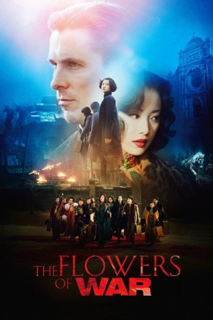

#1218 The Flowers of War
 
 IMDB-Wertung: 7.6 / 10
IMDB-Wertung: 7.6 / 10  Metascore: 46
Metascore: 46 
1937: Die frühere Hauptstadt Chinas, Nanjing, wird zu Beginn des zweiten Chinesisch-japanischen Krieges von japanischen Truppen überrollt, die an der zivilen Bevölkerung ein unbeschreibliches Massaker anrichten. Wie durch ein Wunder bleibt der amerikanische Leichenbestatter und leidenschaftliche Trinker John Miller in den Wirren der Invasion unverletzt und rettet sich in eine westliche Kirche. Hierhin findet auch eine Schar traumatisierter Schüler. Um sie zu schützen gibt Miller sich als Priester aus. Die Scharade funktioniert zunächst auch. Doch als 13 Prostituierte unter Führung von Yu Mo Zuflucht suchen, spitzt sich die Lage dramatisch zu…
Jahr: 2011
Dauer: 146 Minuten
FSK: 16
Land: China Studio: Falcom MediaTonspuren: DTS - ,
Untertitel: Deutsch,
Auflösung: 1080p (1920x800) Größe: 8960 MB
Genre: Drama, Geschichte, Liebe, Krieg
Regisseur: Yimou Zhang
Drehbuch: Heng Liu, Geling Yan
Soundtrack: Qi Gang Chen
Darsteller:
 Christian Bale als John Miller
Christian Bale als John Miller- Ni Ni als Yu Mo
 Paul Schneider als Terry
Paul Schneider als Terry- Junichi Kajioka als Japanese Machinegun Soldier , uncredited
- Xinyi Zhang als Shu
- Tianyuan Huang als George Chen
- Xiting Han als Yi
- Doudou Zhang als Ling
- Dawei Tong als Major Li
- Atsuro Watabe als Colonel Hasegawa
- Kefan Cao als Mr. Meng
- Yangchunzi Yuan als Mosquito
- Jia Sun als Hua
- Yuemin Li als Dou
- Bai Xue als Lan
- Takashi Yamanaka als Lieutenant Asakura
- Shigeo Kobayashi als Lieutenant Kato
- Chun Li als Woman of the Qin Huai River
- Mengqiao Zhou als Woman of the Qin Huai River
- Liuyin Qian als Woman of the Qin Huai River
- Li Deng als Woman of the Qin Huai River
- Yu Zhou als Woman of the Qin Huai River
- Xiaomei Su als Woman of the Qin Huai River
- Qingyuan Ye als Winchester Cathedral Student
- Yaojun Dai als Winchester Cathedral Student
- Junran Shen als Winchester Cathedral Student
- Chuchu Li als Winchester Cathedral Student
- Jingwen Wang als Winchester Cathedral Student
- Ruiqi Li als Winchester Cathedral Student
- Zixin Jin als Winchester Cathedral Student
- Yixuan Gu als Winchester Cathedral Student
- Jiali Xu als Winchester Cathedral Student
- Zhaoyi Zhang als Winchester Cathedral Student
- Yimin Tan als Winchester Cathedral Student
- Yicong Zhao als Winchester Cathedral Student
- Liwen Que als Winchester Cathedral Student
- Yuhan Wu als Winchester Cathedral Student
- Hai-Bo Huang als Peng
- Liangqi Zhu als Pu Sheng
- Shawn Dou als Chinese Soldier
- Yuan Nie als Chinese Soldier
- Jingchun Wang als Chinese Soldier
- Xi Lai als Chinese Soldier
- Xiaoming Guo als Chinese Soldier
- Yuzheng Wang als Chinese Soldier
- Cong Wang als Chinese Soldier
- Li Fei als Chinese Soldier
- Chaobei Wang als Chinese Soldier
- Yohei Matsukado als Japanese Military Outside Affairs Officer
- Shinichi Takashima als Japanese Military Officers
Datei: X:\HD-Eastern-Modern(A-M)\Flowers of War, The (2011, FSK16, 1920x800).mkv seit 04.06.2015
Festplatte: HD Eastern+Western
 Es gibt insgesamt 104 Filme in der Gruppe 'HD-Eastern-Modern(A-M)'
Es gibt insgesamt 104 Filme in der Gruppe 'HD-Eastern-Modern(A-M)'